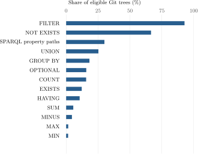

Section 1 covers dataset coverage, shape distribution, SHACL and ontology usage, and constraint satisfiability.
Sections 2 and 3 provide occurrence counts and Git tree prevalence for SHACL shapes, targets, property paths, shape characteristics, and Core constraint parameters.
Section 4 analyzes the use of SPARQL-based constraints and constraint components.
Introduction
SHACL en Forme presents statistics on how the Shapes Constraint Language (SHACL) is used in public GitHub repositories. It is an independent research resource and is not endorsed by the W3C.
The analysis covers SHACL shapes, targets, property paths, Core constraint parameters, and SHACL-SPARQL. It provides occurrence counts and Git tree prevalence using data collected from verified GitHub repositories, excluding forks. The dataset reflects the state of the verified GitHub repositories as of 11 October 2026.
Definitions, syntax rules, and validation procedures are available in the SHACL 1.0 Recommendation.
1 Usage in Practice
1.1 Dataset and Coverage
How many repositories and distinct Git trees are included in the study?
A Git tree represents a snapshot of repository contents. Multiple GitHub repositories may reference the same tree. The analysis uses distinct Git trees to avoid counting identical repository snapshots more than once.
Repositories were verified based on SHACL shape declarations, Core target or constraint predicates, or structurally attached SHACL-SPARQL constraints in parsed RDF graphs. After excluding forks and Git trees without extracted SHACL shape documents, the final dataset contains 3,675 repositories representing 3,657 distinct Git trees.
Among 550,508 files identified for RDF processing, 548,135 were successfully parsed.
A file is counted as a SHACL shape document if it contains at least one SHACL shape. Files containing only annotations or validation reports are not counted.
Measurement
Count
Analyzed Git trees
3,657
Shape documents
50,625
Parsed RDF files
548,135
1.2 Shape Distribution
How are SHACL shapes distributed?
The analysis identified 1,183,518 distinct shapes typed as sh:NodeShape or sh:PropertyShape.
Share of trees
Trees
Distinct shapes
Share of distinct shapes
Top 1%
37
690,425
58.34%
Top 5%
183
1,037,474
87.66%
Top 10%
366
1,104,828
93.35%
SHACL shapes are highly concentrated in a small number of Git trees, with the top 1% containing 58.34% of all shapes.
1.3 SHACL and Ontology Usage
1.3.1 SHACL References to Ontology Terms
How often are the terms used by SHACL shapes typed as classes or properties?
The analysis identified 384,106 distinct IRIs used as classes or properties by SHACL shapes. An IRI counts as a match if the RDF contains an rdf:type triple consistent with its use in SHACL. For example, an IRI used with sh:targetClass matches if it is typed as owl:Class or rdfs:Class. For an IRI used in both roles, a match in either role is sufficient. To find declarations on the web, the analysis looked up term IRIs over HTTP and also checked linked RDF documents and vocabulary files.
Declaration source
Distinct IRIs
Share of IRIs
Same Git tree only
184,491
48.03%
External RDF only
44,854
11.68%
Both
22,769
5.93%
Neither
131,992
34.36%
For 53.96% of the IRIs, a matching type was found in at least one Git tree where the IRI was used. Across Git trees and RDF documents retrieved from the web, 252,114 IRIs had a matching type, or 65.64% of the total.
1.3.2 Ontology Terms Shared Across Documents
How often does another RDF document declare the terms used in a SHACL document?
The analysis covered 44,748 SHACL documents that use class or property IRIs. For each document, it checked which IRIs had matching class or property declarations in other files in the same Git tree or in external RDF documents.
Declaration source
SHACL documents
Share of documents
Same Git tree only
10,243
22.89%
External RDF only
11,072
24.74%
Both
9,913
22.15%
Neither
13,520
30.21%
For 31,228 SHACL documents, another RDF document declared at least one of their terms. Such matches occurred in 3,264 of the 3,636 verified repositories containing SHACL documents that use class or property IRIs.
For each of the 31,228 documents, the analysis calculated the percentage of its distinct terms declared by the source with the most matches. The median was approximately 72%. For 8,571 documents, a single source declared all the terms. In 7,263 SHACL documents that used two or more terms, each matching source declared only one term from the document.
1.3.3 OWL and SHACL Constraints
How often do SHACL constraints match ontology restrictions?
The analysis used Astrea-KG version 1.1 to derive SHACL constraints from ontology documents. Each comparison checked one derived constraint against one SHACL document. The analysis covered the links across documents described in Section 1.3.2 and cases where the ontology and the shapes appeared in the same file.
For OWL restrictions on a class, the SHACL document had to use the same target class and property path. For rdfs:range, the comparison used the same property path regardless of target class. A match required the corresponding SHACL constraint to contain the derived value. For exact cardinality, both bounds had to equal that value on the same property shape.
Ontology restriction
Corresponding SHACL constraint
Comparisons
Matches
Match rate
owl:maxCardinality
sh:maxCount
68,005
61,071
89.8%
owl:minCardinality
sh:minCount
9,757
7,069
72.5%
owl:cardinality
sh:minCount and sh:maxCount
18,208
11,884
65.3%
rdfs:range with a datatype
sh:datatype
215,995
152,158
70.4%
rdfs:range with a class
sh:class
195,963
125,926
64.3%
owl:allValuesFrom
sh:class or sh:datatype
14,291
12,067
84.4%
owl:hasValue
sh:hasValue
1,388
1,242
89.5%
The derived value was present in 371,417 of the 523,607 comparisons, or 70.9%. In 46,692 comparisons, the corresponding constraint contained only other values. In the remaining 105,498, the SHACL document used the property but did not express the corresponding constraint.
1.4 SHACL Constraint Satisfiability
How often can a shape’s constraints be satisfied together?
The analysis covered a subset of SHACL Core constraints. Where a shape used a property path, the path had to be a single property IRI. Each selected shape was analyzed together with the shapes it referenced. Counting each distinct constraint structure once gave 394,685 structures.
A translation based on SHACL2FOL expressed each structure in first-order logic. Vampire, an automated theorem prover, tested whether an RDF node could satisfy all the constraints together.
Result
Distinct structures
Share
All constraints can be satisfied together
386,686
97.97%
The constraints cannot all be satisfied together
971
0.25%
No conclusive answer
1,099
0.28%
Unsupported input
5,002
1.27%
Tool error
927
0.23%
For example, a shape in a test file required at least two email addresses but allowed at most one.
2 Shapes and Constraints
How are SHACL shapes and their properties used in practice?
2.1 Shapes
The analysis identified 1,183,518 shapes explicitly typed as sh:NodeShape or sh:PropertyShape. Shape IRIs are deduplicated per Git tree, and blank nodes are counted per file. The 632 resources typed as both sh:NodeShape and sh:PropertyShape are counted only once in the total.
Implicit property shapes were identified in 3,225 Git trees. A separate analysis counted 1,008,575 such shapes, using distinct IRIs per Git tree and blank nodes per file. Most occur under sh:property, without a sh:PropertyShape type declaration. Likewise, these shapes are included in the Core constraint, property path, SHACL-SPARQL, and OWL–SHACL analyses.
Shape prevalence is calculated over 424,580 explicitly typed node shapes and 759,570 explicitly typed property shapes. Git tree counts may also include shape subjects that are not explicitly typed as sh:NodeShape or sh:PropertyShape.
2.1.1 Targets
The table shows occurrence counts and Git tree prevalence for the four SHACL target predicates.
Parameter
Unique Git trees
Tree prevalence
Occurrences
sh:targetNode
366 / 3,657
10.01%
29,889
sh:targetClass
3,374 / 3,657
92.26%
838,272
sh:targetSubjectsOf
805 / 3,657
22.01%
27,187
sh:targetObjectsOf
570 / 3,657
15.59%
13,725
2.1.2 Severity
Property
Unique Git trees
Tree prevalence
NodeShape prevalence
PropertyShape prevalence
sh:severity
1,048 / 3,657
28.66%
7.58%
14.46%
The following table shows the distribution of explicitly declared severity levels.
Severity
Node shapes
Property shapes
sh:Violation
4,163
105,930
sh:Warning
18,741
2,470
sh:Info
9,138
1,395
sh:Warning is the most common declared severity on node shapes, and sh:Violation on property shapes.
2.1.3 Messages
Property
Unique Git trees
Tree prevalence
NodeShape prevalence
PropertyShape prevalence
sh:message
2,135 / 3,657
58.38%
7.75%
15.42%
sh:message is the most common of the eight properties across Git trees. It is also more common on property shapes than on node shapes.
2.1.4 Deactivation
Property
Unique Git trees
Tree prevalence
NodeShape prevalence
PropertyShape prevalence
sh:deactivated
239 / 3,657
6.54%
0.27%
0.03%
The following table shows the number of shapes with boolean sh:deactivated values.
Value
Node shapes
Property shapes
true
1,045
172
false
122
16
At least one shape is deactivated in 216 Git trees.
2.2 Node Shapes
The analysis identified 424,580 node shapes.
2.3 Property Shapes
The analysis identified 759,570 property shapes.
2.3.1 Property Paths
The following table shows occurrence counts and Git tree prevalence for seven SHACL property path forms. Occurrences include nested path forms, so a single sh:path declaration may contribute to multiple counts.
sh:name is the most common of these properties on both node shapes and property shapes. sh:order and sh:group are more common on property shapes than on node shapes.
3 Core Constraint Components
Which SHACL Core constraint parameters are most widely used?
This section presents occurrence counts and Git tree prevalence for SHACL Core constraint parameters.
Occurrences count RDF triples containing each constraint parameter as a predicate. Git tree prevalence measures the proportion of analyzed Git trees containing that parameter.
Figure 1. The ten most frequent SHACL Core constraint parameters by occurrence count, with their Git tree prevalence.
Occurrence counts and Git tree prevalence show different patterns. For example, sh:class has more occurrences than sh:datatype, but sh:datatype is found in more Git trees. The same pattern appears for sh:maxCount and sh:minCount.
3.1 Value Type Constraint Components
Parameter
Unique Git trees
Tree prevalence
Occurrences
sh:class
2,436 / 3,657
66.61%
1,172,259
sh:datatype
2,989 / 3,657
81.73%
654,821
sh:nodeKind
1,913 / 3,657
52.31%
754,832
3.2 Cardinality Constraint Components
Parameter
Unique Git trees
Tree prevalence
Occurrences
sh:minCount
3,206 / 3,657
87.67%
537,481
sh:maxCount
2,862 / 3,657
78.26%
662,881
3.3 Value Range Constraint Components
Parameter
Unique Git trees
Tree prevalence
Occurrences
sh:minExclusive
336 / 3,657
9.19%
5,565
sh:minInclusive
1,122 / 3,657
30.68%
31,455
sh:maxExclusive
170 / 3,657
4.65%
1,570
sh:maxInclusive
917 / 3,657
25.08%
16,102
3.4 String-based Constraint Components
Parameter
Unique Git trees
Tree prevalence
Occurrences
sh:minLength
668 / 3,657
18.27%
8,794
sh:maxLength
364 / 3,657
9.95%
13,232
sh:pattern
1,295 / 3,657
35.41%
94,905
sh:flags
185 / 3,657
5.06%
19,997
sh:languageIn
273 / 3,657
7.47%
2,957
sh:uniqueLang
382 / 3,657
10.45%
7,520
3.5 Property Pair Constraint Components
Parameter
Unique Git trees
Tree prevalence
Occurrences
sh:equals
168 / 3,657
4.59%
9,358
sh:disjoint
199 / 3,657
5.44%
1,737
sh:lessThan
178 / 3,657
4.87%
1,883
sh:lessThanOrEquals
164 / 3,657
4.48%
650
3.6 Logical Constraint Components
Parameter
Unique Git trees
Tree prevalence
Occurrences
sh:not
637 / 3,657
17.42%
57,824
sh:and
358 / 3,657
9.79%
57,403
sh:or
1,388 / 3,657
37.95%
157,240
sh:xone
413 / 3,657
11.29%
9,324
3.7 Shape-based Constraint Components
Parameter
Unique Git trees
Tree prevalence
Occurrences
sh:node
1,121 / 3,657
30.65%
141,080
sh:property
3,477 / 3,657
95.08%
2,110,844
sh:qualifiedValueShape
520 / 3,657
14.22%
86,924
sh:qualifiedMinCount
496 / 3,657
13.56%
71,003
sh:qualifiedMaxCount
311 / 3,657
8.50%
22,370
sh:qualifiedValueShapesDisjoint
136 / 3,657
3.72%
2,312
3.8 Other Constraint Components
Parameter
Unique Git trees
Tree prevalence
Occurrences
sh:closed
764 / 3,657
20.89%
58,521
sh:ignoredProperties
471 / 3,657
12.88%
29,249
sh:hasValue
1,105 / 3,657
30.22%
77,437
sh:in
1,578 / 3,657
43.15%
74,648
4 SHACL-SPARQL
How is SHACL-SPARQL used in practice?
4.1 SPARQL-based Constraints
Which SPARQL constructs are used in these constraints?
The analysis counts sh:sparql triples and typed SPARQL constraint nodes per RDF file.
Measurement
Count
Git trees
1,065
Tree prevalence
29.12%
sh:sparql triples
85,496
Typed SPARQL constraint nodes
25,073
The analysis identified 84,467 sh:sparql triples referencing SELECT queries that could be parsed, out of 85,496 triples, across 1,040 Git trees.

Figure 2. Git tree prevalence of SPARQL constructs in these queries.
Although MINUS appears in the analyzed queries, its use is prohibited by SHACL 1.0.
4.2 SPARQL-based Constraint Components
How widely are custom SPARQL-based constraint components used?
Custom constraint components allow developers to define validation rules using SPARQL. Their use was analyzed by checking for mandatory custom parameter predicates in shapes from the same Git tree as the component definition.
Measurement
Git trees
Tree prevalence
Custom constraint components
102
2.79%
ASK-based validators
91
2.49%
SELECT-based validators
94
2.57%
The dataset contains 115 distinct SPARQL-based custom constraint component IRIs. This analysis covered 106 components. The other nine had no mandatory custom parameter predicates that could be used for this check. Parameter matches were found for 31 components, including 20 with matches in multiple shapes. No matches were found for the remaining 75.